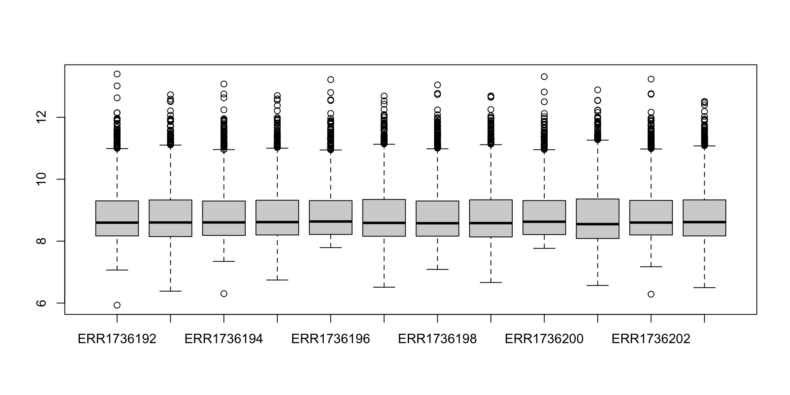
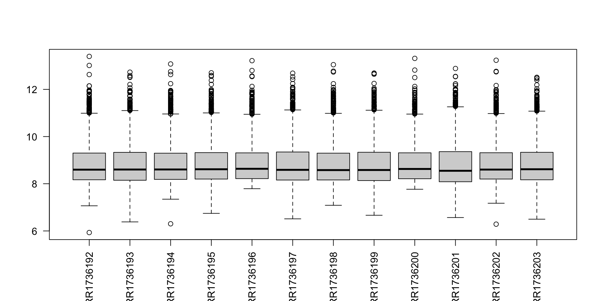
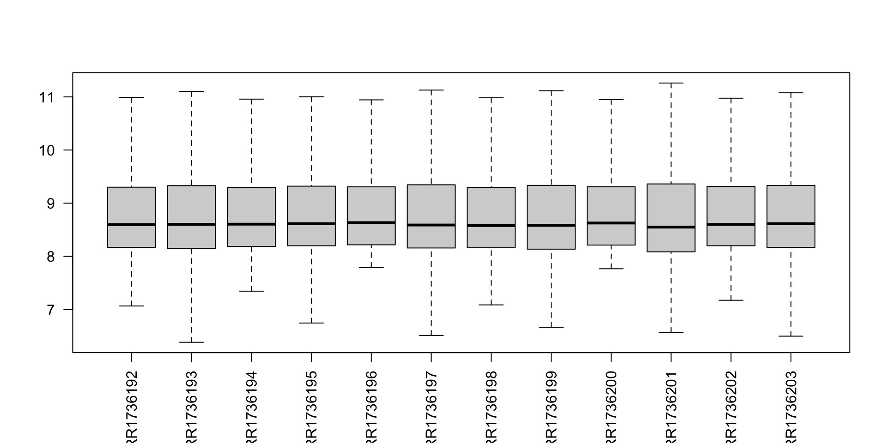
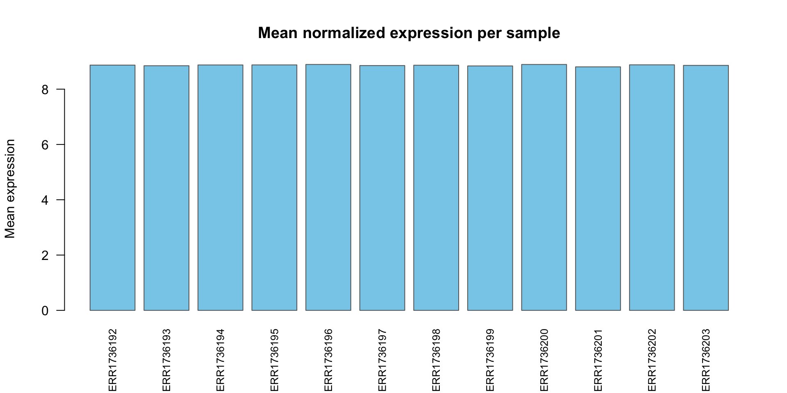
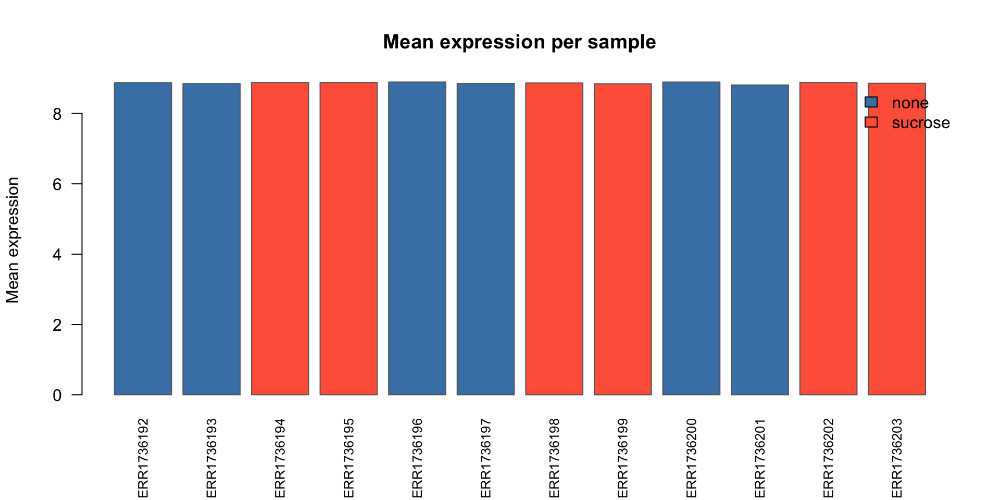
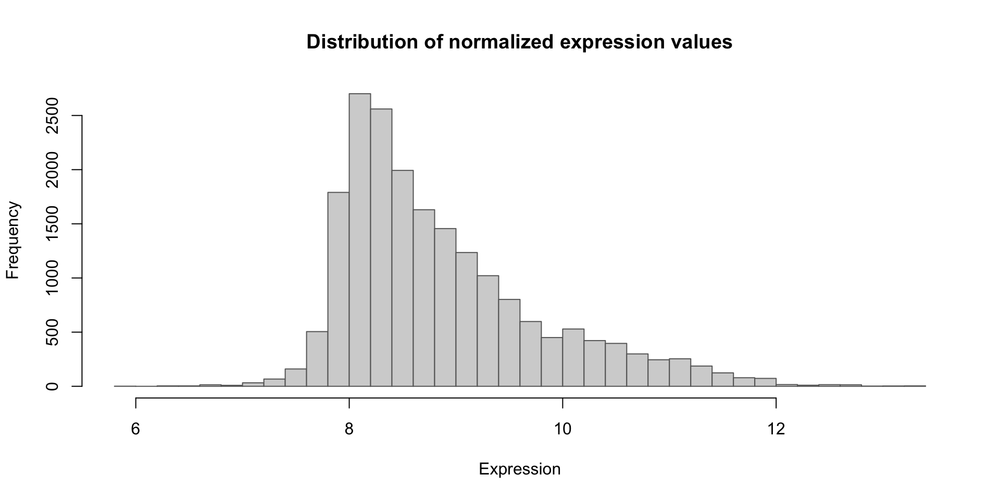
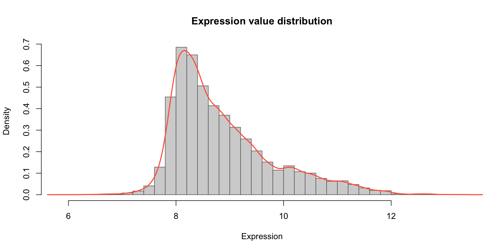
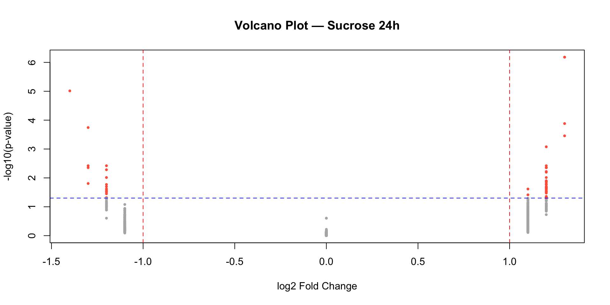
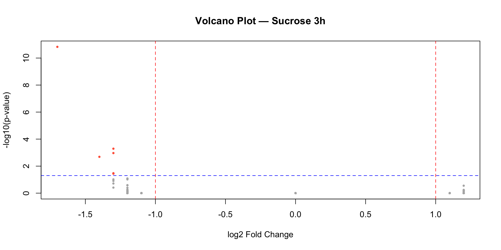

List of 3
$ counts:'data.frame': 1642 obs. of 13 variables:
..$ Gene_ID : chr [1:1642] "AT1G01090" "AT1G01100" "AT1G01300" "AT1G01320" ...
..$ ERR1736192: num [1:1642] 8.95 10.71 8.26 10.47 9.6 ...
..$ ERR1736193: num [1:1642] 8.75 11.05 8.62 9.85 9.74 ...
..$ ERR1736194: num [1:1642] 8.94 10.76 8.32 10.55 9.43 ...
..$ ERR1736195: num [1:1642] 8.8 10.93 8.52 10.17 9.66 ...
..$ ERR1736196: num [1:1642] 8.88 10.59 8.35 10.64 9.49 ...
..$ ERR1736197: num [1:1642] 8.78 11.02 8.49 9.91 9.76 ...
..$ ERR1736198: num [1:1642] 8.92 10.72 8.33 10.46 9.5 ...
..$ ERR1736199: num [1:1642] 8.92 11 8.73 9.84 9.85 ...
..$ ERR1736200: num [1:1642] 8.86 10.7 8.25 10.54 9.48 ...
..$ ERR1736201: num [1:1642] 8.88 11.04 8.44 9.75 9.78 ...
..$ ERR1736202: num [1:1642] 8.93 10.6 8.32 10.63 9.43 ...
..$ ERR1736203: num [1:1642] 8.81 10.99 8.34 10 9.61 ...
$ diff :'data.frame': 1642 obs. of 6 variables:
..$ Gene_ID : chr [1:1642] "AT1G01090" "AT1G01100" "AT1G01300" "AT1G01320" ...
..$ Gene_name : chr [1:1642] "PDH-E1 ALPHA" "RPP1A" "APF2" "" ...
..$ sucrose_24h_pval: num [1:1642] 0.591 0.569 0.565 0.743 0.884 ...
..$ sucrose_24h_lfc : num [1:1642] 1.1 1.1 1.1 0 0 0 0 1.1 0 1.1 ...
..$ sucrose_3h_pval : num [1:1642] 0.998 0.998 0.998 0.998 0.998 ...
..$ sucrose_3h_lfc : num [1:1642] 0 -1.1 0 1.1 -1.1 0 1.1 0 0 1.1 ...
$ anno :'data.frame': 12 obs. of 4 variables:
..$ Sample_ID: chr [1:12] "ERR1736192" "ERR1736193" "ERR1736194" "ERR1736195" ...
..$ compound : chr [1:12] "none" "none" "sucrose" "sucrose" ...
..$ dose : chr [1:12] "none" "none" "15 millimolar" "15 millimolar" ...
..$ time : chr [1:12] "24 hour" "3 hour" "24 hour" "3 hour" ...Exercise - Block 1
Exploratory data analysis
Check the number of samples and genes in these data
Gene_ID ERR1736192 ERR1736193 ERR1736194 ERR1736195 ERR1736196 ERR1736197
1 AT1G01090 8.951818 8.745436 8.936055 8.796355 8.881562 8.783848
2 AT1G01100 10.714686 11.049205 10.760942 10.925465 10.586018 11.018331
3 AT1G01300 8.262611 8.621839 8.317833 8.524731 8.351529 8.490846
4 AT1G01320 10.474282 9.846080 10.547565 10.166405 10.638864 9.910971
5 AT1G01620 9.602057 9.741940 9.433688 9.660392 9.487521 9.759061
6 AT1G01960 7.992299 8.164980 7.940793 8.188539 8.066384 8.091465
ERR1736198 ERR1736199 ERR1736200 ERR1736201 ERR1736202 ERR1736203
1 8.918614 8.917665 8.859714 8.880689 8.925662 8.810786
2 10.720866 11.003460 10.697236 11.038316 10.602965 10.990252
3 8.326726 8.726843 8.252066 8.438347 8.321741 8.337898
4 10.459285 9.842758 10.536018 9.752592 10.629175 10.004448
5 9.495713 9.854984 9.475491 9.780328 9.425490 9.608561
6 7.887148 8.068782 8.022251 7.938457 7.981151 8.096472The first column contains gene IDs. We can replace put them as row names, and remove the character column
ERR1736192 ERR1736193 ERR1736194 ERR1736195 ERR1736196 ERR1736197
AT1G01090 8.951818 8.745436 8.936055 8.796355 8.881562 8.783848
AT1G01100 10.714686 11.049205 10.760942 10.925465 10.586018 11.018331
AT1G01300 8.262611 8.621839 8.317833 8.524731 8.351529 8.490846
AT1G01320 10.474282 9.846080 10.547565 10.166405 10.638864 9.910971
AT1G01620 9.602057 9.741940 9.433688 9.660392 9.487521 9.759061
AT1G01960 7.992299 8.164980 7.940793 8.188539 8.066384 8.091465
ERR1736198 ERR1736199 ERR1736200 ERR1736201 ERR1736202 ERR1736203
AT1G01090 8.918614 8.917665 8.859714 8.880689 8.925662 8.810786
AT1G01100 10.720866 11.003460 10.697236 11.038316 10.602965 10.990252
AT1G01300 8.326726 8.726843 8.252066 8.438347 8.321741 8.337898
AT1G01320 10.459285 9.842758 10.536018 9.752592 10.629175 10.004448
AT1G01620 9.495713 9.854984 9.475491 9.780328 9.425490 9.608561
AT1G01960 7.887148 8.068782 8.022251 7.938457 7.981151 8.096472[1] 1642 12Check if the data is normalized

Exercise 1
A. Sample names are not properly readable. Rotate them to make perpendicular to the x-axis.
Tip

B. Remove the boxplot outliers
Tip

Mean expression per sample

Exercise 2
Can you color the samples by their conditions?
Tip

Volcano plot of results
Gene_ID Gene_name sucrose_24h_pval sucrose_24h_lfc sucrose_3h_pval
10 AT1G01090 PDH-E1 ALPHA 0.5905386 1.1 0.9983381
11 AT1G01100 RPP1A 0.5688959 1.1 0.9983381
33 AT1G01300 APF2 0.5650828 1.1 0.9983381
36 AT1G01320 0.7427942 0.0 0.9983381
69 AT1G01620 PIP1-3 0.8840503 0.0 0.9983381
105 AT1G01960 BIG3 0.8171195 0.0 0.9983381
sucrose_3h_lfc
10 0.0
11 -1.1
33 0.0
36 1.1
69 -1.1
105 0.0Expression value distribution

Exerise 3
Can you add density curve for smoothness?
Tip

Volcano plot of differential results
Sucrose 24h

Sucrose 3h

Exercise 4
Can you display both the plots together?
Tip